Case Study
Partnership System
The infrastructure that turns partner referrals into a revenue channel
In CFD brokerage, partnership (IB - Introducing Broker) is the referral model: partners bring in clients and earn commission on their trading. It's one of the lowest marginal-cost acquisition channels in the industry, and one of the steadiest.
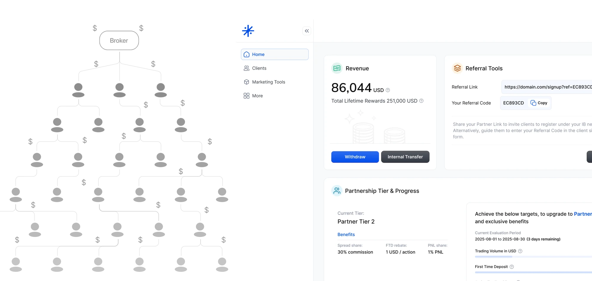
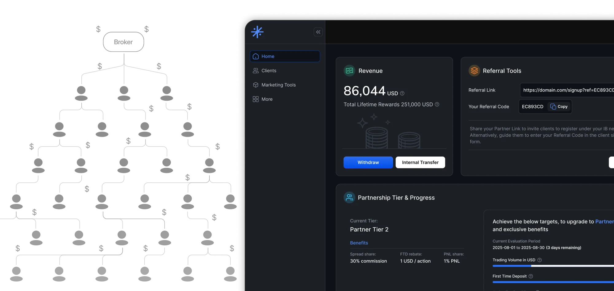
Six months after launch
Why build it
When I returned to the broker as Head of Product, the partner business already existed — with just 5 partners — but had no system behind it at all.
Drawing on my experience at Exness, a top-tier company, I saw the need to bring that partnership model and system architecture back to the broker, to scale a segment with real potential.
The problems with the old model were clear:
-
No system
- Partners and rewards managed in spreadsheets.
- Partner relationships and schemes managed through MT5 group naming.
-
Operational risk
- Only one person in the company knew how to calculate rewards manually.
- Reward calculation took up to 5 days a month, and still required manual C-level review.
-
Couldn't scale
- No UI for partners to see their business represented.
- Partner count couldn't grow.
Big directions
Partnership systems have been in this market for years. I was building one late — so I studied what already existed. I broke down what we needed internally, and drew on what I'd seen meeting partners at Exness offline seminars. The goal: learn from the strengths of other systems, and fix their weaknesses. From that, I set two main directions.
Architecture design direction
The system had to scale without limits, to handle whatever partners might ask for. The infrastructure and data schema didn't need to be perfect — but they always had to leave room to adopt new requirements.
User direction
This system touches money, and the people using it — company staff — make mistakes.
So it needed multiple layers of protection against user error. Guarding against careless mistakes became a key item on the development checklist.
Key decisions
This was a demanding, genuinely interesting project. It forced a few big structural decisions — and a constant obsession with scaling without limits. Below are the two biggest decisions, then an overview of the system's main modules.
Rebuilding the CRM & Back Office data schema
We wanted to scale without limits, but the data schema at the time couldn't support that. The original system was designed to run a simple broker model — not to plug into a Partnership System with complex customization needs.
So I made a decision that was painful, costly, and risky, but a risk I could control: tear down most of the old structure, rebuild it, and migrate the data from scratch.
I wasn't willing to build on top of a weak foundation.
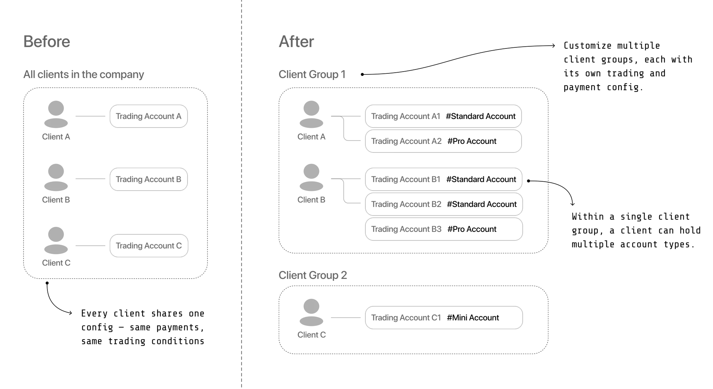
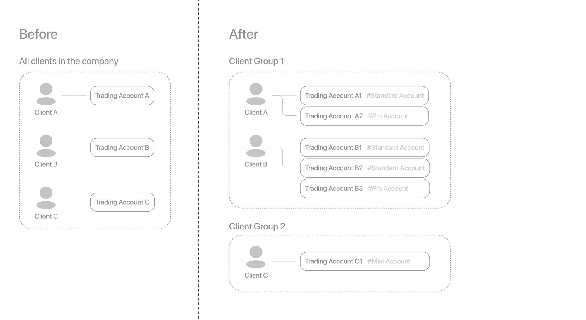
Rebuilding the CRM & Back Office data schema
The setup
As covered earlier, we had to rebuild the data schema and add foundational CRM features to support the partnership system — all to meet our partners' demanding requirements. Here's a real example of what "the schema couldn't support it" looked like: a request from a large partner during negotiation.
What the partner asked for
Say a partner — John, with a network of 2,000 clients large and small — wants to work with the broker, and comes in with a demanding set of requirements:
- I want two different client groups — one with a higher trading fee, one with lower.
- I want to decide which clients go into which group.
- But within each group, I still want multiple account types, from low fee to high, for the client to choose from.
- And for each account type, I want a different partner reward when that client trades.
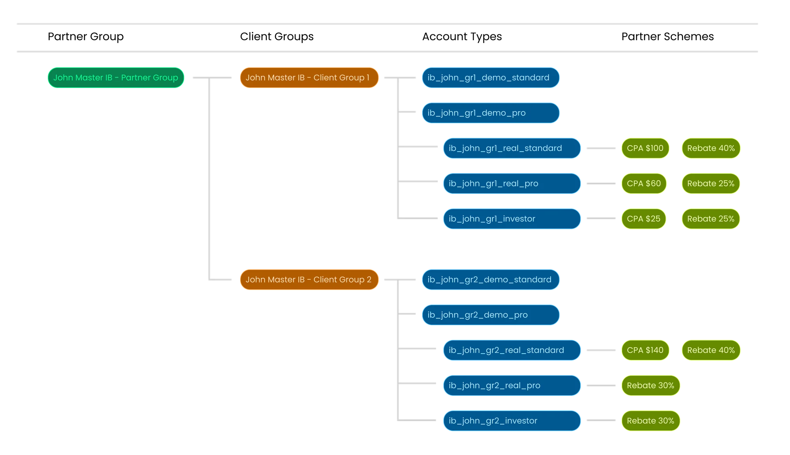
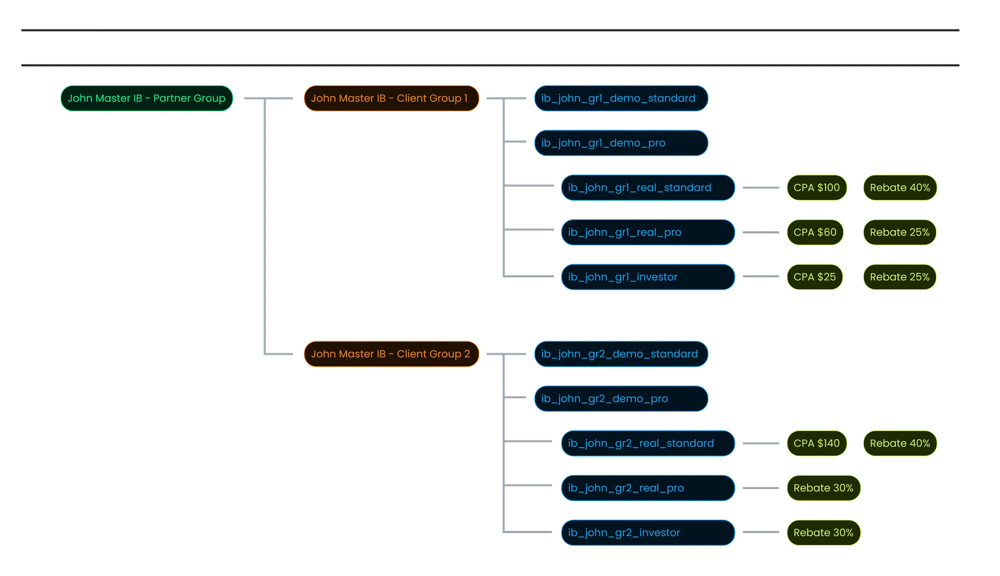
Why the old schema couldn't handle this
Problem 1: No concept of a client group.
Every client in the system was treated the same. There was no grouping — any change had to be hardcoded client by client.
Fix: I introduced a client group as a first-class entity, with its own configurable attributes (exchange rate, which account types it's allowed to use, and so on). Clients get assigned to a group; a partner's clients can sit in a group built specifically for them.
Problem 2: No concept of an account type.
Trading accounts were controlled entirely through MT5 groups — the CRM itself had no definition of trading conditions at all.
Fix: I introduced account type as a configurable entity, and linked it to client group: a given client group is restricted to a defined set of account types, each with its own spread, commission, and swap fee — from low to high.
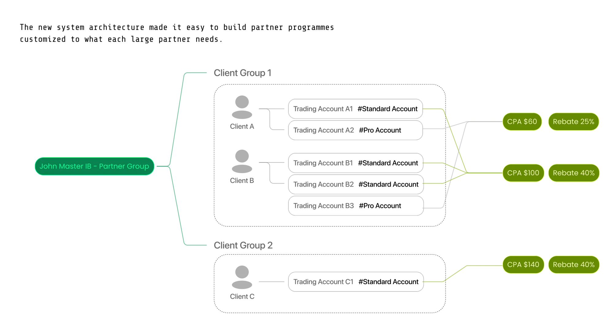
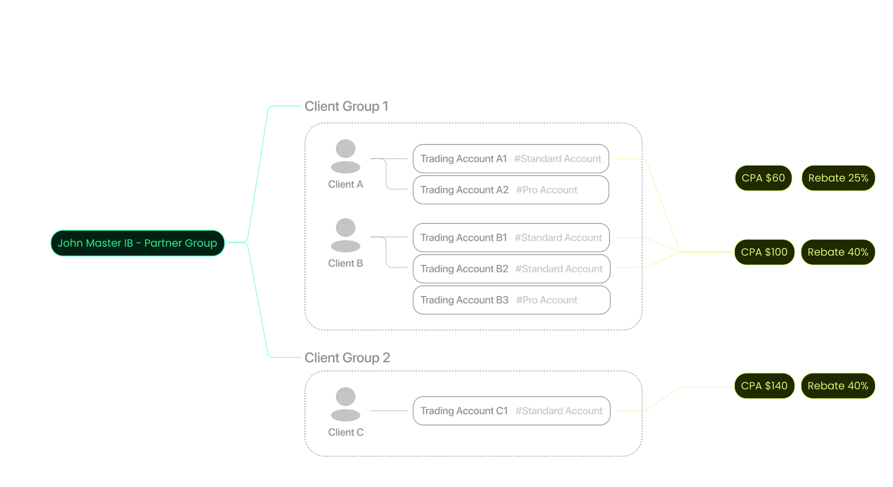
What this bought us
This wasn't an easy call. Rebuilding meant losing time, burning effort, and taking on real operational and data risk — migration especially could go wrong in ways that hit live accounts. I sat with that trade-off for a while, but I didn't want to build the Partnership System on a foundation I already knew would collapse under it. Rebuilding first was the only path to something that could actually last.
That restructuring gave us a foundation solid enough to organize and manage clients properly — and it's exactly what the Partnership System was built on top of in the next phase. It's what lets the system satisfy every part of that partner's request, including the hardest one: a different reward for the same client, depending on which account type they trade from.
From that point on, the system could take on real customization and scale with it. A short-term risk for long-term flexibility — and it paid off.
Managing partner schemes as dynamic modules
Working with partners — especially when negotiating and onboarding large ones — means they'll ask to change their scheme, customize it, or even switch it mid-run. Every large partner also comes with its own set of custom requirements.
So I designed the architecture to manage schemes as modules from the start, to maximize customization without needing to touch the code.


The goal: keep every partner happy, and take on any partnership opportunity for the broker — running many customized schemes with many partners at the same time.
What "dynamic" means in practice
The setup
Winning large partners away from local and international competitors comes down to one thing: how far you can customize their programme. So when I designed this system, I set myself one rule — I should always be able to say yes to a new request, never "sorry, the architecture doesn't allow that."
Here's what "dynamic" actually means in practice — a few standalone examples to show how far the customization goes.
A. Taking on any scheme a large partner asks for
A large, demanding partner can come to us with a fully custom set of scheme requirements. As long as it's reasonable and safe for the company, we can set it up and launch it in about 30 minutes — no code involved.
The design is modular: Every piece — the scheme, the trading conditions — is built from independent components. That's what makes it possible: when either the broker or the partner wants a change, we swap the component. No code needed. Here's what that looks like:


B. A growth path built for one partner
A large partner willing to commit to specific KPI targets can get a progression path of their own: as they clear each milestone, their reward rates step up — higher rebates and CPA across every client group and account type.
This runs on the same modular design. Defining a partner's growth path is a configuration, not a build — agreed on and live in about 30 minutes.
![A single partner's growth path laid out as a grid. Along the top, a timeline of tiers — Entry Tier, Tier Level 2, and further tiers beyond. Each tier column lists its target KPIs (active traders, total value locked, net deposit) and, below them, the reward rates that tier unlocks for every combination of client group and account type — rebate percentages and CPA amounts, all rising from one tier to the next. Individual cells are highlighted to show that each one is placed by configuration rather than written in code.](images/growth-light.webp)
![A single partner's growth path laid out as a grid. Along the top, a timeline of tiers — Entry Tier, Tier Level 2, and further tiers beyond. Each tier column lists its target KPIs (active traders, total value locked, net deposit) and, below them, the reward rates that tier unlocks for every combination of client group and account type — rebate percentages and CPA amounts, all rising from one tier to the next. Individual cells are highlighted to show that each one is placed by configuration rather than written in code.](images/growth-dark.webp)
C. Built to take on more
The system isn't designed to support just a handful of partners. By design, it could serve hundreds — even thousands — of large partners, if the business ever gets there. Each with their own requirements, and the system doesn't break down as that number grows.
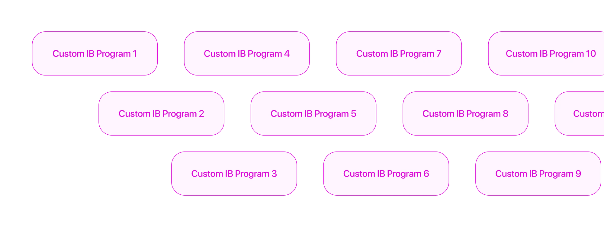
The rest of the system
The other major capabilities that keep the system running, grouped by area.
- Partner Management managing partners by attribute group, managing per-partner attributes, tracking and sharing rewards across a 7-level partner relationship
- Scheme Management Scheme Builder, Scheme Management Module, Scheme Calculation Scheduler
- Reward Payment Partner Wallet, Reward Credit, Reward Withdrawal, Internal Transfer
- Partner Growth Tier Auto Upgrade / Downgrade
- Fraud Prevention Self-Referral Detection
- Partner Area UI Partner Dashboard, Mini CRM to manage clients, Marketing Hub, Payment Functions, Reward & Client Reporting
![A map of the whole partnership system. A Partner Manager layer runs from Director or CEO down to Manager or Department Head, who oversees mistake control, fraud prevention and reports. Below it a Backend layer holds attribute management, partner groups, scheme management, and scheme calculation with revenue protection and payroll, plus A/B book and ceiling controls, payroll approval, tier up- and down-grade, relationship management with sub-levels, and client cashback. On the left a Partner Area gives partners referral codes and links, account and payment, partner tier, marketing material, reports, client cashback, a loyalty programme and a mini CRM. Arrows show partners and clients moving between the three layers.](images/system-light.webp)
![A map of the whole partnership system. A Partner Manager layer runs from Director or CEO down to Manager or Department Head, who oversees mistake control, fraud prevention and reports. Below it a Backend layer holds attribute management, partner groups, scheme management, and scheme calculation with revenue protection and payroll, plus A/B book and ceiling controls, payroll approval, tier up- and down-grade, relationship management with sub-levels, and client cashback. On the left a Partner Area gives partners referral codes and links, account and payment, partner tier, marketing material, reports, client cashback, a loyalty programme and a mini CRM. Arrows show partners and clients moving between the three layers.](images/system-dark.webp)
How we worked
Over 6 months, with 1 PM and 4 engineers, we delivered the entire system — including rebuilding the CRM and Back Office data schema from the ground up, all while running other projects in parallel.
Our developers were based in China and didn't speak English, so we worked Zero-Meeting: I owned architecture, backend logic, API, front-end design, spec, and QA myself — so when work reached them, they could just code, with little to no need to ask questions.
The system in practice
Partner Area UI
The Partner Area focuses on what partners actually need: a Mini CRM to manage their own clients, and visibility into how their rewards are calculated and paid. The goal was trust — partners can see the logic, not just the result.
![Three phone screens side by side. Home Dashboard: revenue with a withdraw action, referral tools with a copyable link and code, and a reward-performance panel. Mini CRM: a client list where each client shows an ID, a status badge such as acquisition in progress or active trader, current status and next target, plus lifetime deposit, withdrawal and live trading figures. Funnel Overview: counts for leads, KYC clients, first-time-deposit clients, traded clients, recently active clients and premium clients.](images/partner-area-light.webp)
![Three phone screens side by side. Home Dashboard: revenue with a withdraw action, referral tools with a copyable link and code, and a reward-performance panel. Mini CRM: a client list where each client shows an ID, a status badge such as acquisition in progress or active trader, current status and next target, plus lifetime deposit, withdrawal and live trading figures. Funnel Overview: counts for leads, KYC clients, first-time-deposit clients, traded clients, recently active clients and premium clients.](images/partner-area-dark.webp)
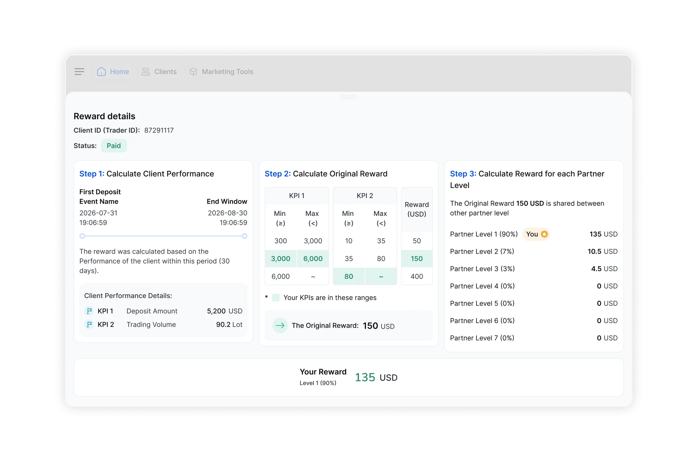
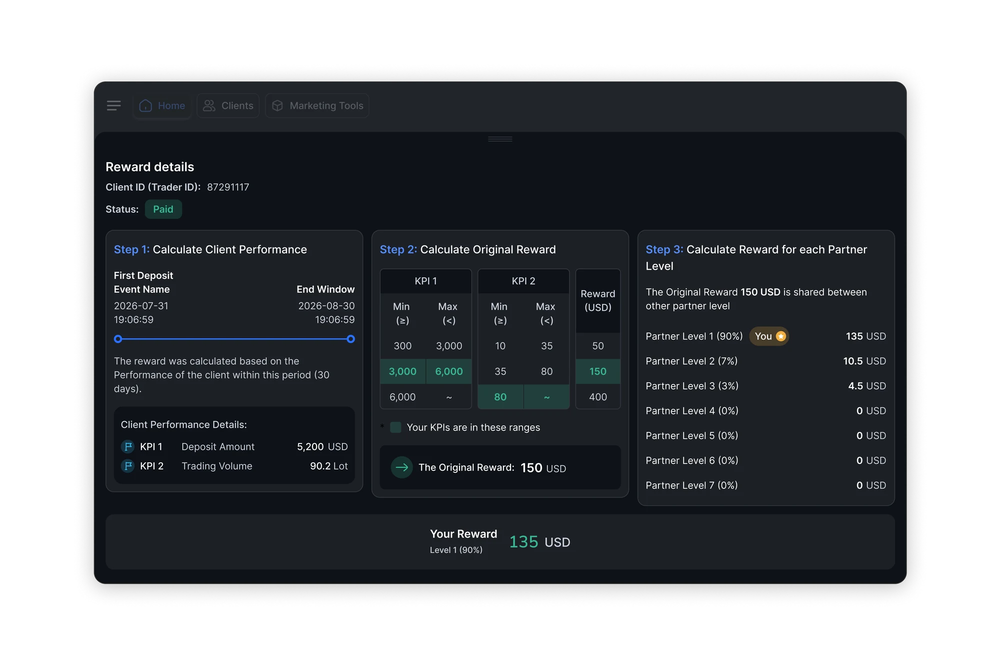
Scheme Builder Form
There are three builder forms, one for each scheme type. Each one offers a set of KPI metrics and reward types to choose from, and lets a CRM user configure payout rates per partner tier. Every form includes inline guidance at each step, so users can't misconfigure a scheme without understanding what they're setting.
I designed each form to walk through the full calculation logic — the trigger event, the KPI measurement window, the reward tiers, and how the reward splits across up to seven partner levels. What I was really after was control: I wanted the payout logic powerful enough to handle the hardest requests a partner could throw at us, and precise enough to trust. And this is just one scheme type — I built the system to support several.
![The Scheme Builder form laid out as four configuration steps. Step 1 sets the trigger event and the measurement window, with a timeline diagram showing the window opening at the trigger and closing after a set number of days. Step 2 chooses how many KPIs to measure and configures each one, including minimum position hold and which symbols or symbol groups to include. Step 3 sets the scheme tiers — a table mapping ranges of both KPIs to a reward amount — and the operator between them. Step 4 sets reward sharing, distributing the original reward across partner levels one to seven by percentage. Each step carries its own diagram and inline explanation.](images/scheme-builder.webp)
Growth Path Form (Tier Up / Down)
The Growth Path Form makes tier upgrade and downgrade logic visible and editable directly — the conditions for promoting or demoting a partner aren't buried in code. Multiple partner programmes, each with their own tier logic, can run side by side without conflict.
![The Growth Path form for a partner tier chain. A basics panel sets the chain name, whether it is enabled and how often it runs; a marketing panel sets the name and description partners see. Below, a row of tiers runs left to right, each one picking a partner group. Every tier carries an upgrade condition block tinted green and, from the second tier on, a downgrade block tinted red. Each block is built from KPI rules — trading volume, KYC count, active traders, profit — joined by AND and OR, with controls to add a single condition or a whole condition group, and a JSON preview.](images/growth-path-form.webp)
Fraud Prevention Engine
Fraud prevention runs on weekly scoring across device, network, and attribution signals, rolling up into a partner-level risk rate. Each case shows a plain-language explanation and a confidence band, with three graduated actions — blacklist the partner, blacklist the flagged clients only, or clear it.
The impact
Six months after launch, the system — together with the Business Development team's work — had driven significant growth, opening a kind of opportunity the broker had never had before.
Payout reconciliation went from 5 person-days a month to automated 30-minute cycles.
The distribution is a long tail: most partners refer just a handful of clients each, a smaller group brings in dozens, and only a few bring in more. The channel's strength comes from the breadth of many small partners, not a few large ones.
Contact
Building partner infrastructure, or hiring someone who has?
I work on the systems behind FX/CFD brokerages — commission engines, CRM, back office, the parts that don't show but decide everything.
Get in touch